Ruta principal del servidor real de desarrollo en localhost:3000, con datos sintéticos y fotografías realistas. Mismo scroll (100 px), contenido y escala en las comparaciones. Los PNG conservan los píxeles originales; las tarjetas de altura diferente no se redimensionan.
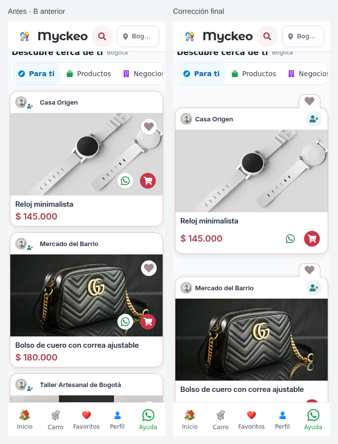
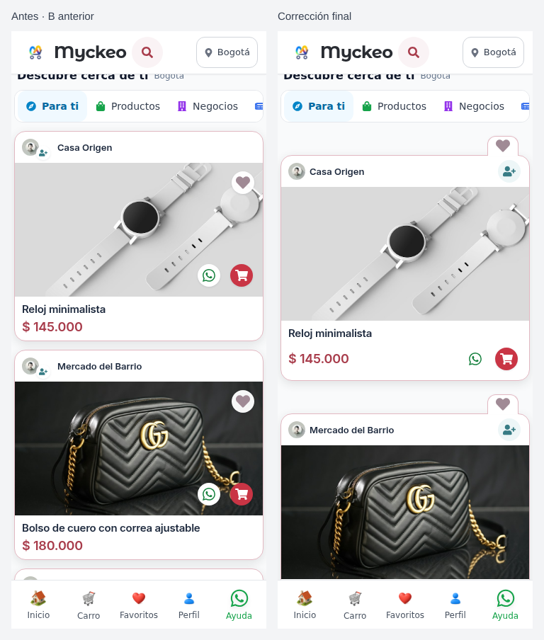
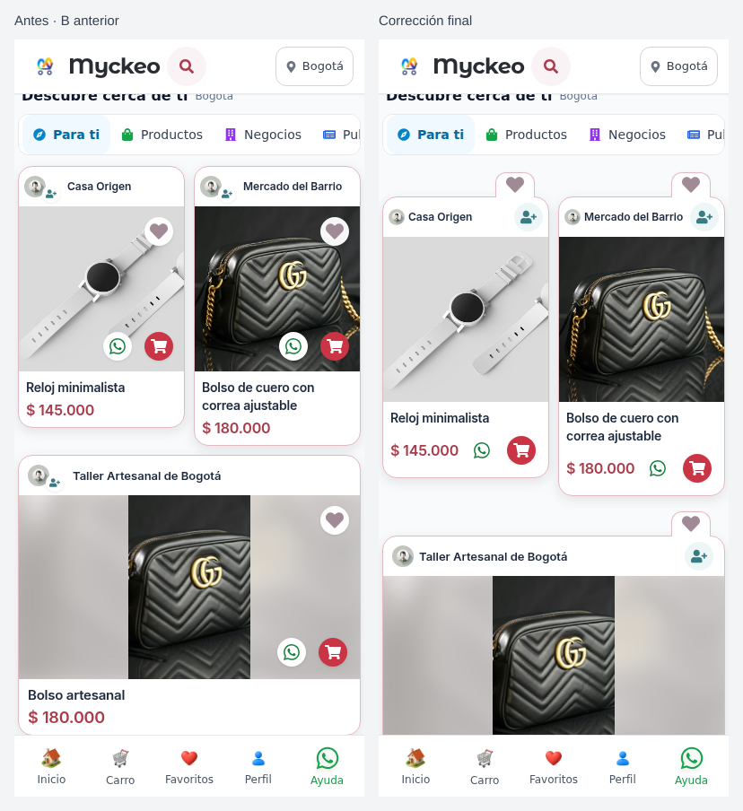
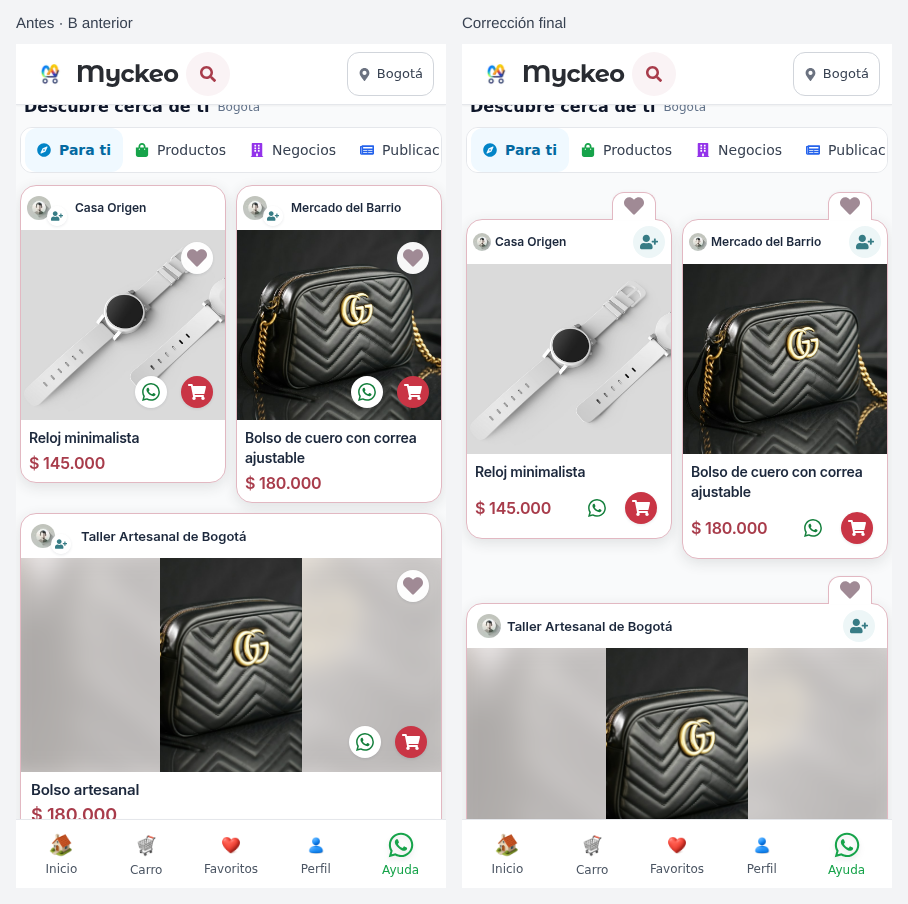
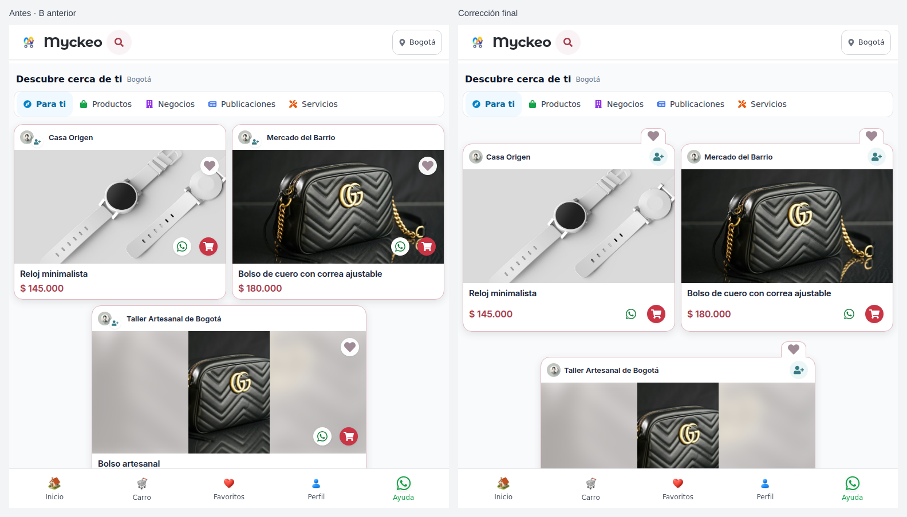
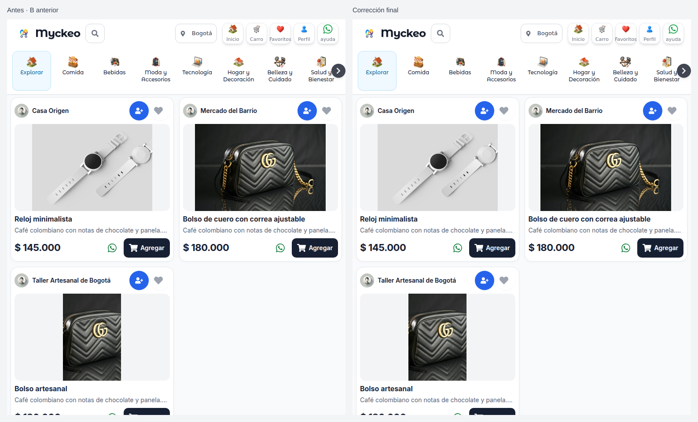
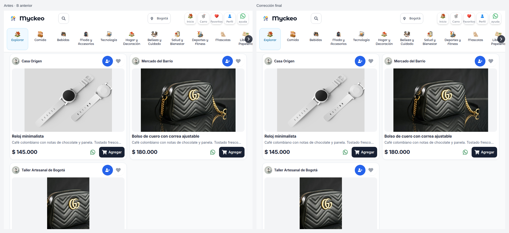
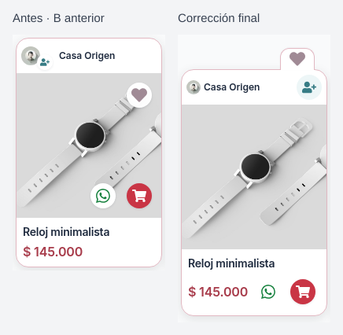
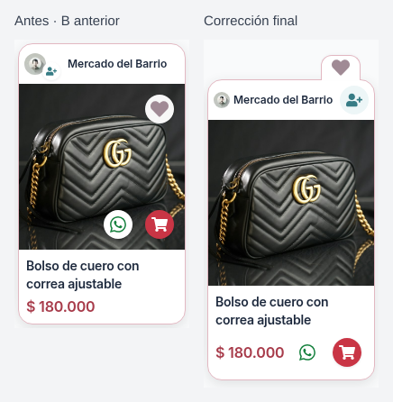
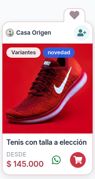
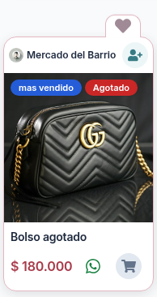
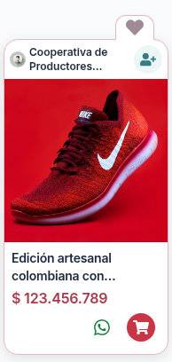
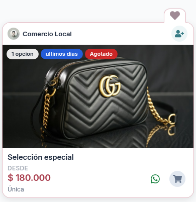
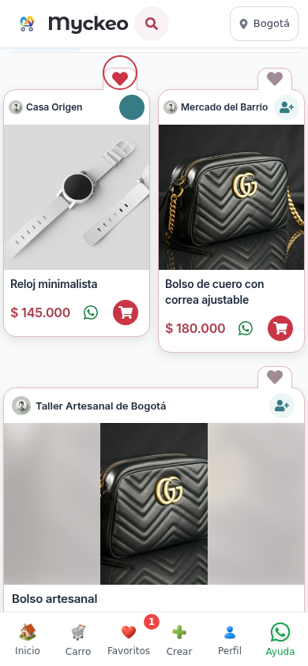
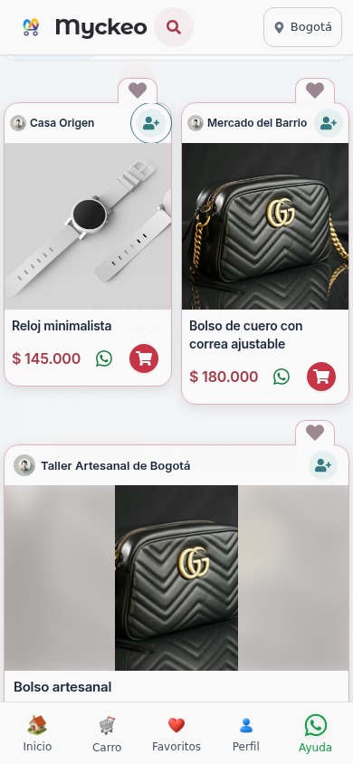